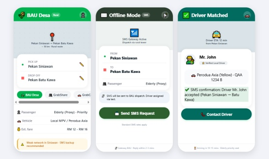
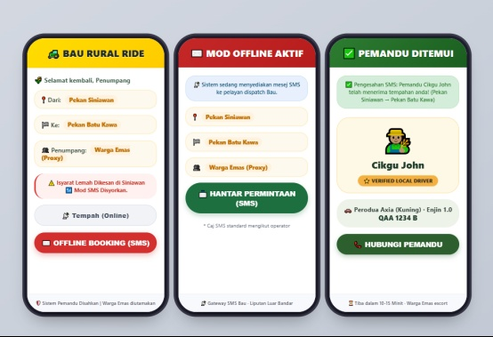

This study investigates the viability of a rural-oriented e-hailing dispatch system tailored to address the infrastructural and behavioral barriers in Bau, Sarawak — a community facing last-mile connectivity challenges and heavy reliance on personal vehicles.
A quantitative research design grounded in UTAUT2 was used. Data collected via structured survey from 34 Bau district residents. A conceptual UI/UX prototype featuring offline booking and proxy-booking was evaluated.
Existing urban-centric e-hailing platforms fail rural communities due to limited internet bandwidth, dispersed populations, and distinct socio-economic realities incompatible with standard app design.
Performance Expectancy and Facilitating Conditions are the strongest adoption drivers. Offline SMS/USSD booking is a compulsory — not optional — feature for rural viability.
Bau lacks sufficient mass transit coverage, forcing residents to depend heavily on personal vehicles to reach Kuching and essential services.
Urban-centric apps presuppose high-speed internet, large smartphone user bases, and dense driver populations — all absent in rural Sarawak.
Sparse demand makes it economically unattractive for drivers to join e-hailing services, leaving rural users with long waits or no service at all.
81.8% of Bau residents rely entirely on personal cars. Only 6.1% currently use any e-hailing service.
Platforms like Grab & Maxim are optimized for density and continuous connectivity. Their algorithms disadvantage low-density rural areas, reducing driver coverage and equitable access.
Sarawak exhibits persistent urban-rural ICT gaps. Shadow zones, low 4G coverage, and informal transport systems (kereta sewa) define the current rural mobility landscape in Bau.
Extends earlier TAM models by adding 7 constructs relevant to consumer adoption. Applied here with Price Value, Trust, and Facilitating Conditions highlighted for rural contexts.
No empirical studies in Sarawak directly assess DRT (Demand-Responsive Transport) adoption or offline-first, proxy-booking system designs for rural populations.
All 6 independent constructs → Behavioral Intention (BI) to adopt rural e-hailing.
Moderated by the rural context: offline access, community trust, local economic conditions.
Requirements analysis + UI/UX prototype design with offline & proxy-booking features
UTAUT2-based questionnaire development via Google Forms (5-point Likert scale)
Purposive sampling – survey distributed to Bau district residents & commuters
Statistical analysis: mean scores, Cronbach's Alpha, correlation & regression
| Characteristic | Value |
|---|---|
| Gender split | Male 52.9% / Female 47.1% |
| Dominant age group | 26–35 yrs (47.1%) |
| Second age group | 36–45 yrs (32.4%) |
| Main location | Pekan Bau (76.5%) |
| Other locations | Siniawan 17.6%, Tondong etc. |
Respondents were shown the UI/UX prototype before completing the survey to ground their feedback in a concrete system concept.
Mean scores on a 5-point Likert scale (n = 34). All constructs validated at "High" to "Very High" levels.
| Construct | Items | α |
|---|---|---|
| Performance Expectancy | 3 | 0.88 |
| Facilitating Conditions | 3 | 0.87 |
| Trust | 3 | 0.86 |
| Effort Expectancy | 3 | 0.85 |
| Price Value | 3 | 0.83 |
| Social Influence | 3 | 0.81 |
All values exceed the 0.70 threshold → High internal consistency
| Construct | r | p |
|---|---|---|
| Performance Expectancy | 0.812 | 0.000 |
| Facilitating Conditions | 0.798 | 0.000 |
| Price Value | 0.761 | 0.001 |
| Trust | 0.743 | 0.001 |
| Effort Expectancy | 0.714 | 0.002 |
| Social Influence | 0.658 | 0.004 |
All p < 0.05 → all hypotheses statistically significant
| Construct | Beta (β) | t-value | p | Decision |
|---|---|---|---|---|
| Performance Expectancy | 0.341 | 4.82 | 0.000 | H1 ✓ |
| Facilitating Conditions | 0.318 | 4.51 | 0.000 | H4 ✓ |
| Price Value | 0.247 | 3.29 | 0.002 | H5 ✓ |
| Trust | 0.223 | 2.97 | 0.006 | H6 ✓ |
| Effort Expectancy | 0.198 | 2.61 | 0.014 | H2 ✓ |
| Social Influence | 0.154 | 2.08 | 0.046 | H3 ✓ |
Social Influence had the lowest β (0.154), suggesting that in rural communities, personal utility and infrastructure readiness matter more than social peer pressure in driving adoption.
Smartphone app (low-bandwidth), SMS/USSD gateway for shadow zones, proxy-booking for non-smartphone users.
Dispatch engine, route optimizer, demand prediction, and community driver verification registry.
S-Pay Global & government subsidy APIs, MCMC connectivity maps, telecom operator SMS APIs for USSD.
Hybrid cloud-edge architecture. Edge nodes at community centers provide offline capability & synchronize when connectivity is restored.
Offline Booking Gateway (SMS/USSD) · Proxy-Booking Interface · Community Driver Profile · Subsidized Fare Display · Low-Bandwidth Map View
Visualizing the Access Layer: Demonstrating the Offline SMS Gateway and Elderly (Proxy) Booking capabilities tailored for Bau's network shadow zones.


| Feature | Urban Platforms (Grab/Maxim) | Proposed Rural System |
|---|---|---|
| Network Requirement | Continuous 3G/4G | Offline-first; SMS/USSD fallback |
| Device Requirement | Smartphone mandatory | Feature phone + proxy-booking |
| Driver Verification | Platform identity check | Community-endorsed local registry |
| Pricing Model | Dynamic surge pricing | Fixed rates + subsidy integration |
| Service Coverage | Urban and peri-urban only | Rural + shadow zones |
| Digital Literacy Req. | High (app navigation) | Low–medium (simplified UI; proxy) |
| Data Architecture | Centralized cloud-only | Hybrid cloud-edge (local sync) |
MCMC & Sarawak government should require offline functionality as a minimum standard — not optional — for subsidized rural mobility platforms.
Formalize local driver identity verification with community endorsements through district councils to build the trust that rural users demand (Mean = 4.41).
Targeted fare subsidies using the S-Pay Global ecosystem to address the high Price Value sensitivity of rural low-income users.
SDEC co-location of lightweight edge servers at schools, surau, and district offices to enable offline synchronization and dual-use digital access points.
Training in Bahasa Malaysia & local languages targeting elderly and non-smartphone users to reduce Effort Expectancy barriers.
Urban-centric e-hailing models are structurally inadequate for rural Bau. High adoption intent already exists — the primary barriers are structural, not attitudinal. Residents are ready; infrastructure is not.
Empirical validation of UTAUT2 in a rural Malaysian context. Confirmed offline booking as a mandatory architecture feature. UI/UX prototype as a replicable blueprint for rural DRT platforms.
Develop the prototype into a full coded application and pilot with verified local drivers in Pekan Bau and Siniawan.
Implement S-Pay Global & government transit subsidy APIs into the live system.
Expand UTAUT2 survey to other rural Sarawak districts with a larger sample to confirm scalability.
"Sustainable digital mobility in rural settings requires localized, context-aware IT architectures — not the direct application of urban digital transport models."